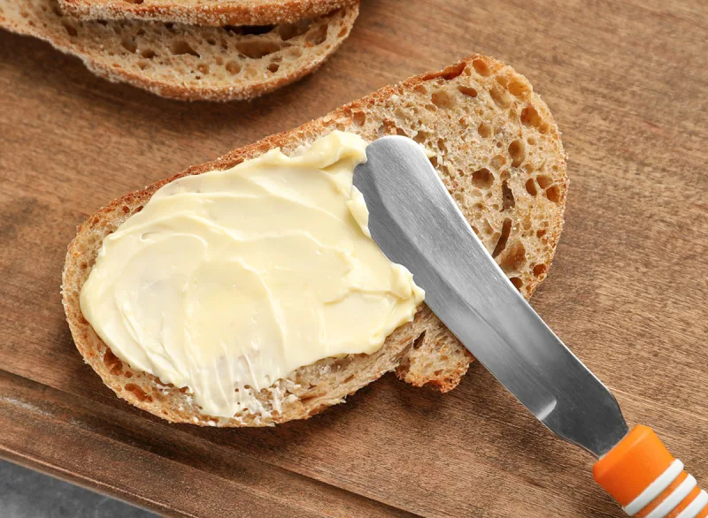
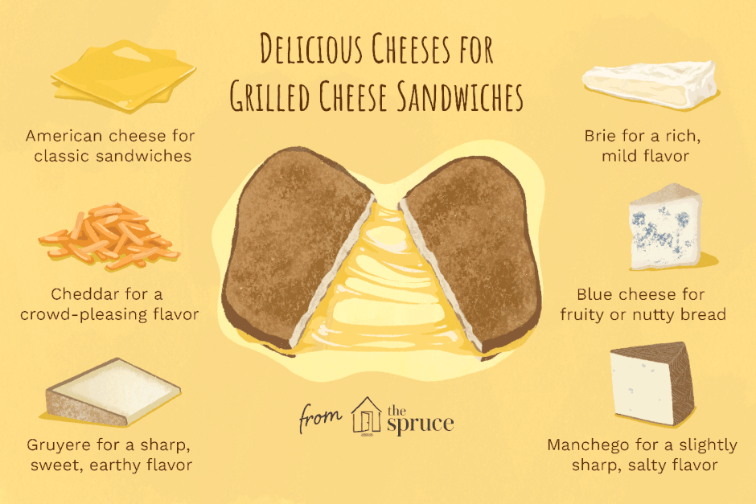

How to make Grilled Cheese
By Dereck Jimenez
Step 1: Butter your bread, making sure to butter the sides not containing the cheese.
NOTE: For a crispier texture always butter your bread.
Step 2: Place your desired cheese in between the bread not having butter.
Step 3: With the gridle set to low-medium heat, place the butter side down onto the griddle.
NOTE: If you don't hear sizzling, it means your pan isn't hot enough.
Step 4: Flip the Grilled Cheese onto the other side after 3-4 minutes or until golden brown.
Step 5: Take off the griddle, serve and enjoy!

SIDENOTE: If preferred, flip back over to reheat for around 15 seconds.